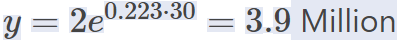

Net Change
This section is all about net change which is similiar tp rate of cahnge but is over the interval (a, b).This has to do With the application of integrtals because in order to find the net change we must take the integral to properly evaluate over the inteval
Exponential Growth or Decay is when a variable is increasing or decreasing an exponential rate (not a straight line). We usually see Exponential Growth and Decay problems relating to populations, bacteria, temperature, etc, usually dealing with time. It turns out that if a function is exponential, as many applications are, the rate of change of a variable is proportional to the value of that variable.
Ex:
A city had a population of 2 million people in 2000, and a population of 2.5 million in 2010
Find the Exponential growth model
and use the model to predict the population in 2030.
Ans:
We already have  (Millions). We can begin counting at year 2000.(0,2)
Now let’s use the other (t, y) data point (10, 2.5) to solve for k(population)
(Millions). We can begin counting at year 2000.(0,2)
Now let’s use the other (t, y) data point (10, 2.5) to solve for k(population)

now we are finding 2030(t = 3) 
Ex:
Solve the differential equation
Ans:
Ex:
The rate of change of R with respect to t is proportional to value R
When t=0, R=300 and when t=1. r=500
write and solve the differential equation that models this situation.
Ans: